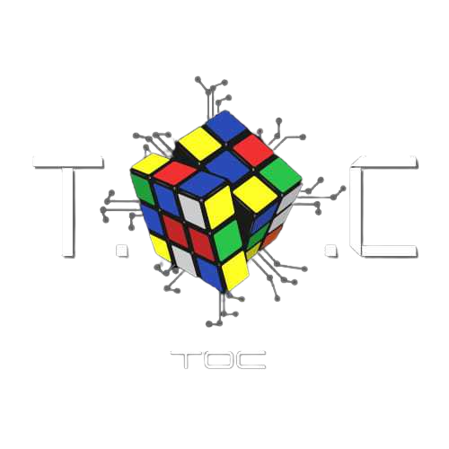

Sobre o Cubo Mágico:

Conhecido também como cubo Rubik, o cubo mágico foi inventado pelo professor Erno Rubik, em 1974. No mesmo ano, recebeu o prêmio alemão de "Jogo do Ano". Além disso, seu próprio criador demorou cerca de 1 mês para resolver o cubo pela primeira vez. Mais algumas coisas aleatórias para preencher o quadrado inteiro, e mais coisas ainda pra fechar a linha abaixo.

Como montar um Cubo Mágico:
- Identifique os 3 tipos de peça: centro, canto e borda.
- Monte uma cruz.
- Vire a cruz branca para a face de baixo do cubo, formando uma cruz completamente branca.
- Resolva a primeira camada.
- Resolva a camada intermediária.
- Posicione os cantos e as bordas do cubo.
- Escrevendo coisas aleatórias.